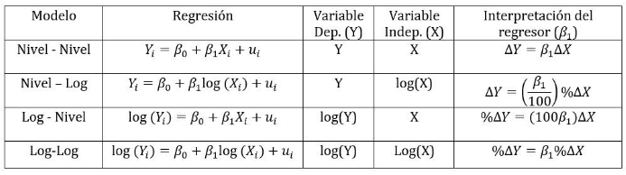

Econometría
Basica
Econometría se refiere al desarrollo y uso de técnicas estadísticas y probabilísticas para el análisis de datos económicos. A diferencia de la información generada en un experimento de laboratorio puro, donde el entorno y las variables están bajo control, la mayor parte de los datos que debe analizar la econometría proviene del sistema económico en su marcha diaria, y están por fuera del control del analista; son lo que produce el sistema, de manera que es difícil saber qué causa qué (Montenegro, 2018).
Formas Funcionales de las Regresiones
Regresión Nivel - nivel
Para esta regresión usaremos datos de la base econmath que contiene datos sobre los resultados en la prueba ACT de estudiantes en estados unidos, junto con algunas características de estos. Estamos interesados en determinar si el promedio en high School afecta los resultados en matemáticas de esta prueba, por lo que usaremos las siguientes variables:
- actmth: Variable con información de la calificación de los estudiantes en la prueba de matemáticas .
- hsgpa: Variable con información el promedio en high school del estudiante.
- male: Variable binaria que indica si el estudiante es hombre o mujer .
- colgpa: Variable con información sobre el promedio en el college .
- study: Variable con información de las horas estudiadas cada semana .
reg actmth hsgpa study male colgpa
Dado que estamos interesados en la interpretación de hsgpa, y tanto nuestra variable independiente como dependiente están en niveles, la interpretación será la siguiente: Al aumentar en una unidad el promedio en High School, los resultados de la prueba de matemáticas del ACT aumentaran en promedio y manteniendo todo lo demás constante en 3.99 puntos. Esta es una estimación altamente significativa. Aquí hay que tener presente que el promedio en High School va de 0 a 4, por lo que un aumento de una unidad es bastante. Además, el puntaje máximo en el ACT matemáticas es de 36. Dado lo anterior tendría sentido aplicar logaritmo a la variable hsgpa para ver el efecto de un aumento porcentual sobre el ACT matemáticas.
Regresión Nivel - Log
En las regresiones Nivel - Log tendremos nuestra variable dependiente en niveles y nuesta independiente en log. Para este ejemplo usaremos la base de datos econmath del ejemplo anterior, pero esta vez estaremos interesados en determinar como un aumento porcentual en el promedio de High school afecta los resultados de la prueba de matemáticas ACT.
gen lhsgpa = log(hsgpa)
reg actmth lhsgpa study male colgpa
Ahora, dado que esta es una regresión Nivel - Log, la interpretación para nuestra variable de interés "lhsgpa" será la siguiente: Ante un aumento de un 1% en el promedio de High School, los resultados en el ACT matemáticas aumentaran en promedio y manteniendo todo lo demás constante, en 0.128 puntos. Como se pudo observar, el coeficiente de lhsgpa se debe dividir por 100 para interpretar correctamente.
Regresión Log - Nivel
Para este tipo de regresión importaremos una base de datos que contiene información sobre 526 trabajadores para el año 1976. Supongamos que estamos interesados en determinar el efecto de la educación sobre el salario por hora de los trabajadores. Este salario, lo tendremos en logaritmo, por lo que tendremos una interpretación Log - Nivel
- lwage:Variable con información del salario por hora de los trabajadores en logaritmo (Nuestra variable dependiente de interés).
- educ: Variable con información de los años de educacion de los trabajadores.
- exper Variable con información de los años de experiencia del trabajador.
- expersq: Variable "exper" al cuadrado.
- female: Variable binaria que indica si el trabajador es hombre o mujer .
reg lwage educ exper expersq female
Ahora teniendo en cuenta que wage esta en logaritmos y educ esta en niveles diremos que: Al aumentar en un año la educación de las personas, su salario por hora aumentaría en promedio en 8.41%, manteniendo lo demás constante. Esta estimación resulta ser altamente significativa. La estimación obtenida para el regresor educ se multiplica por 100.
Regresión Log - Log
Por ultimo, para realizar una regresión Log - Log, tanto nuestra variable dependiente como nuestra variable independiente deben estar en logaritmo. Para este caso estamos interesados en el efecto de un aumento porcentual en la experiencia sobre el salario por hora. Seguiremos usando la base de datos WAGE1 pero ahora, exper estará en logaritmo.
gen lexper = log(exper)
reg lwage educ lexper female
Teniendo en cuenta que tanto wage como exper esta en logaritmos, tendremos una interpretación log - log, y diremos que: Un aumento en un 1% en la experiencia de las personas aumenta en promedio y manteniendo lo demás constante, el salario por hora en 0.157 puntos porcentuales, siendo una estimación altamente significativa.
Variables Binarias
Las variables binarias, también conocidas como variables Dummy o dicotomas, nos ayudan clasificar cuando se cumple o no una condición. Por ejemplo en la base de datos WAGE1 tenemos una variable llamada "female" que le da valores de 1 a las mujeres y valores de 0 a los hombres. En el caso anterior nos indicaba si existía una diferencia estadística entre los salarios por hora de los hombres y las mujeres.
Para dar un ejemplo de como se realiza la interpretación, usaremos la base de datos econmath para ver si hay una diferencia estadística entre las mujeres y los hombres en los resultados de la prueba de matemáticas del ACT. Traeremos entonces los resultados de la primera regresión pero ahora nos fijaremos en el coeficiente de la variable male.
reg actmth hsgpa study male colgpa
Este coeficiente se interpreta de la siguiente manera: Los hombres obtienen en promedio y manteniendo todo lo demás constante, 1.48 puntos de mas que las mujeres en la prueba de matemáticas del ACT.
Interacciones entre variables Binarias
Algo que también podemos hacer es realizar interacciones entre variables binarias. Suponiendo que tenemos dos variables binarias, una de genero y otra de color de piel que nos indica cuando una persona es blanca o de color, podríamos interactuar estas variables para diferenciar por ejemplo, el efecto de hombres blancos con hombres de color, mujeres de color y mujeres blancas. Dependiendo de nuestro objetivo, esto podría tener sentido. Para dar un ejemplo continuaremos con la base de datos econmath, y vamos a interactuar la variable binaria "male" y la variable binaria "econhs" que indica si la persona tuvo un curso de economía en High School. Esto se realiza de la siguiente forma:
gen econmale = male*econhs

Para tener una interpretación mas completa, en nuestra regresión añadiremos la variable "male" individualmente, la variable "econhs" y la interacción "econmale". En este caso, tendremos un grupo base, que serán las mujeres que no vieron un curso de economía en High School. Estas estarán representados con un 0 en la variable "econmale".
reg actmth econmale hsgpa study male econhs colgpa
La interpretación se complica un poco en estos casos, pero veamoso de la siguiente forma. Nuestra ecuación estimada es la siguiente: $$ actmth = \beta_{0} + \beta_{1}male + \beta_{2}econ + \beta_{3}econmale + ...$$ Si queremos encontrar el efecto de cualquier grupo respecto de las mujeres que no vieron un curso de economía (grupo base), lo haremos de la siguiente forma:
- Hombres y curso de economía: $\beta_{1} + \beta_{2} + \beta_{3}$
- Hombres sin curso de economía: $\beta_{1}$
- Mujeres y curso de economía: $ \beta_{2}$
R cuadrado
El $R^{2}$ nos dice que tanto mis regresores explican la variación en y. Matemáticamente tendremos que $R^{2}$ se escribe como: $$ R^{2} = \frac{\sum_{i=1}^{n}{(\hat{y} - \bar{y})^{2}}}{\sum_{i=1}^{n}{(y_{i} - \bar{y})^{2}}} = \frac{SSE}{SST} $$ Donde SSE es la suma explicada de cuadrados y SST es la suma total de cuadrados. Es importante notar que con el $R^{2}$ aumenta a medida que añadimos regresores. Es por esto que aparece el $R^{2} Ajustado$, en el cual el coeficiente puede disminuir si se añade un regresor que no aporta nada a nuestra regresión. Este R cuadrado lo podemos encontrar también en cada regresión que realizamos.
reg lwage educ lexper female
En este caso podemos decir que nuestros regresores explican un 39.4% de nuestra variable dependiente "actmth". Esto lo podemos ver en la esquina superior derecha de la tabla de regresión, en la parte que dice R-squared.
Estadístico t
La distribución t con m grados de libertad se obtiene dividiendo una normal estándar $z$ por la raíz de una Chi cuadrado $\sqrt{X^{2}}$. El resultado se distribuye t con m grados de libertad. Despues de algo de matematicas llegamos a: $$ \frac{\hat\beta_{i} - q}{\sqrt{{\hat\sigma_{\epsilon}}^{2}(X'X)^{-1}}} \sim t_{n - k - 1} $$ Para lo que nos interesa, al realizar una regresión utilizamos el estadístico t para ver si una estimación es estadísticamente significativa o no. Usualmente se usa que q = 0, para probar la significancia estadistica pero no tiene que ser necesariamente así. Específicamente podemos ver la significancia de una estimación a través del valor de la t o de su p-value (son equivalentes): Cuando ocurre que: - $p-value < $ nivel de significancia o - $t > $valor critico entonces, rechazamos $H_{0}$ en favor de $H_{1}$. $H_{0}$: La estimación no es significativa $H_{1}$: La estimación es significativa.
Volviendo a la regresión anterior diremos que nuestro regresor econmale no significativo ya que tiene un p-value de 0.59. Esto lo podemos ver en arriba a la derecha en la tabla. Si vemos los estadísticos t llegaríamos a la misma conclusión.
Estadístico F
La idea del estadístico F es imponer varias restricciones al mismo tiempo. El caso mas comun es ver si $\beta_{1} =\beta_{2} = \beta_{3} = 0$, es decir, si estas 3 variables son conjuntamente no significativas. El estadístico F compara dos regresiones, una restringida y otra sin ninguna restricción. El punto es que si la suma de residuos al cuadrado de las dos regresiones es estadísticamente igual, es porque mi $H_{0}$ es verdad, y no la rechazaríamos. El estadístico F puede ser visto en terminos del R cuadrado como: $$ F = \frac{R^{2}/(n - k - 1)}{(1-R^{2}/(k))} \sim F_{r, n - k - 1} $$ $H_{0}$: Las estimaciones no son significativas conjuntamente. $H_{1}$: Las estimaciones son significativas conjuntamente. En otras palabras, el estadístico F nos indica cuando nuestros regresores son conjuntamente significativos. Este estadístico resulta útil cuando hay alta correlación entre nuestros regresores, lo cual hace que el estadístico t no sea tan confiable para rechazar significancia. En el punto anterior rechazamos significancia estadística de la variable econmale, lo cual nos haría pensar que debemos eliminar este regresor, pero si miramos el estadistico F...
La probabilidad del estadístico F es practicamente 0, por lo que rechazamos $ H_{0} $, es decir, todos nuestros regresores son significativos conjuntamente.
Bibliografía:
- Verbeek, M. (2004), A Guide to Modern Econometrics.
- Wooldridge, Jeffrey M. (2018), Introductory Econometrics: A Modern Approach, Sixth Edition, Cengage Learning.
- Montenegro, A. (2018), Econometría Intermedia y Básica.